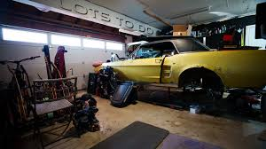
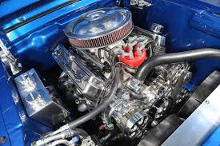
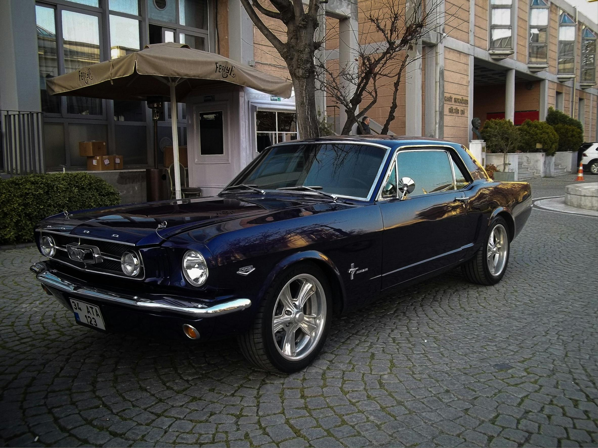

This 1967 Mustang was discovered in a forgotten barn after more than 20 years. Covered in rust, dust, and completely non-functional, it was a true challenge.
Initial Condition
The chassis was heavily corroded, engine seized, and interior completely damaged. Every component needed careful inspection before restoration began.

Disassembly Process
The vehicle was fully dismantled to assess hidden damage and structural issues. Each part was cataloged for restoration or replacement.

Engine Rebuild
The engine was completely stripped, cleaned, and rebuilt using precision tools and OEM-spec components for long-term reliability.

Final Restoration Result
After months of craftsmanship, the Mustang returned to life — restored to showroom condition with its original character preserved.
